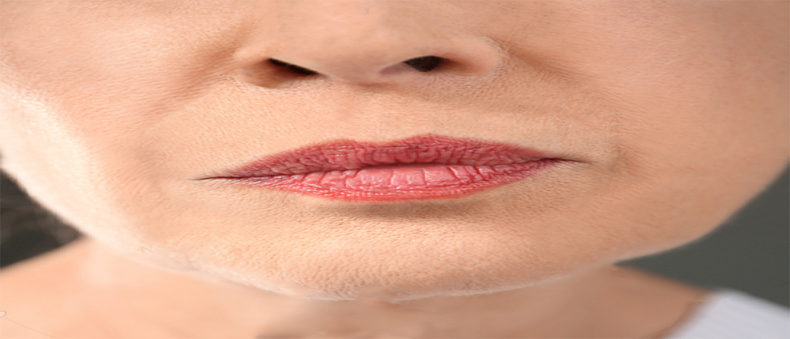
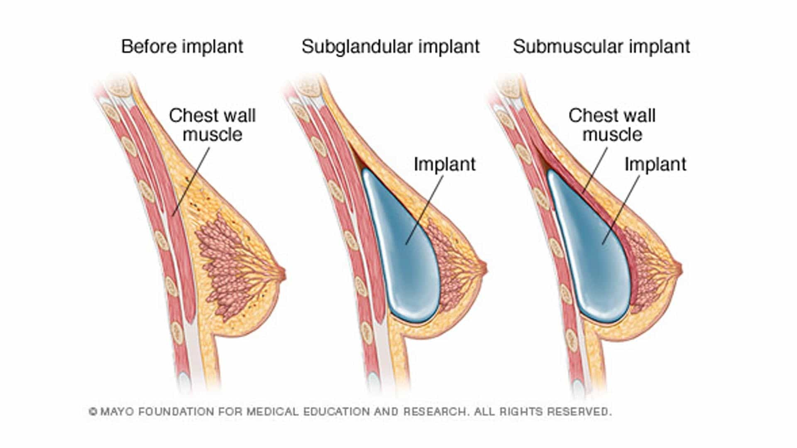
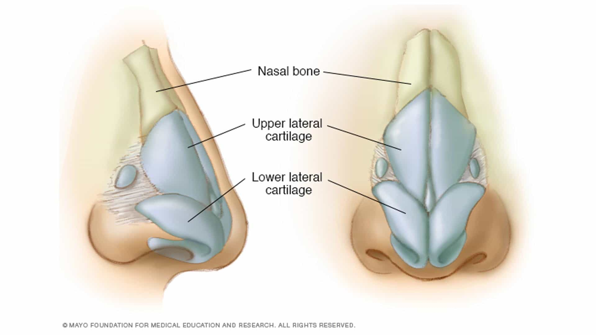
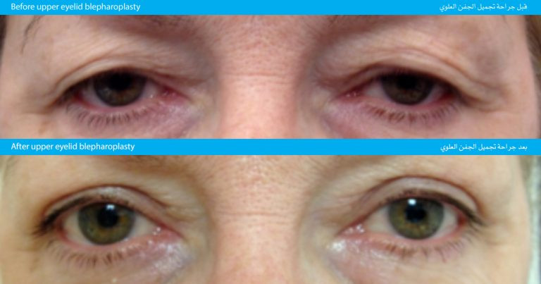
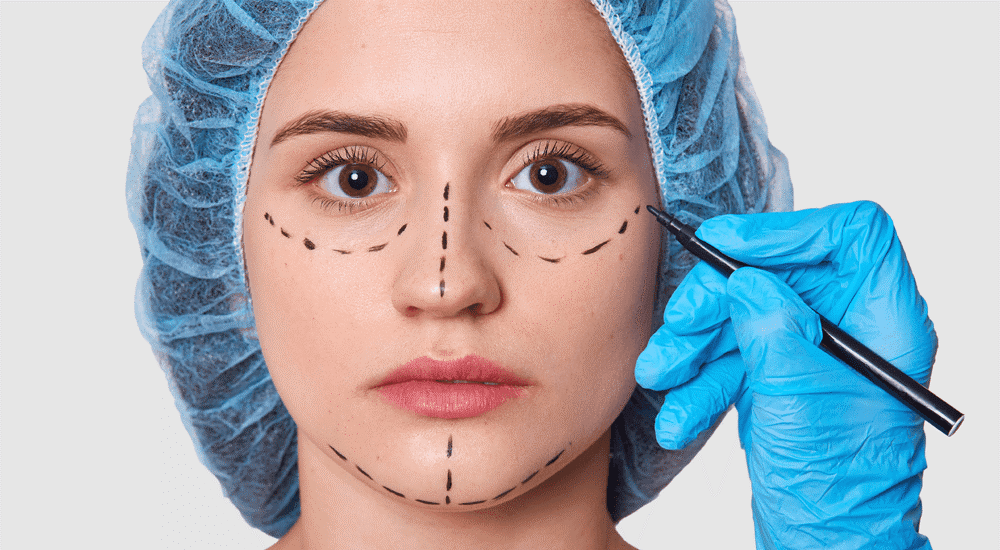
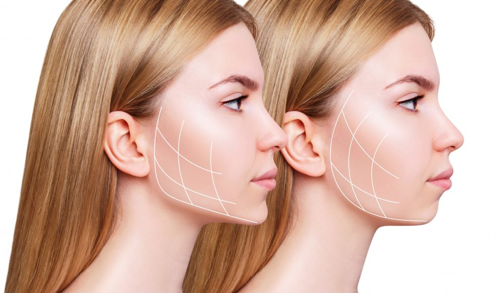
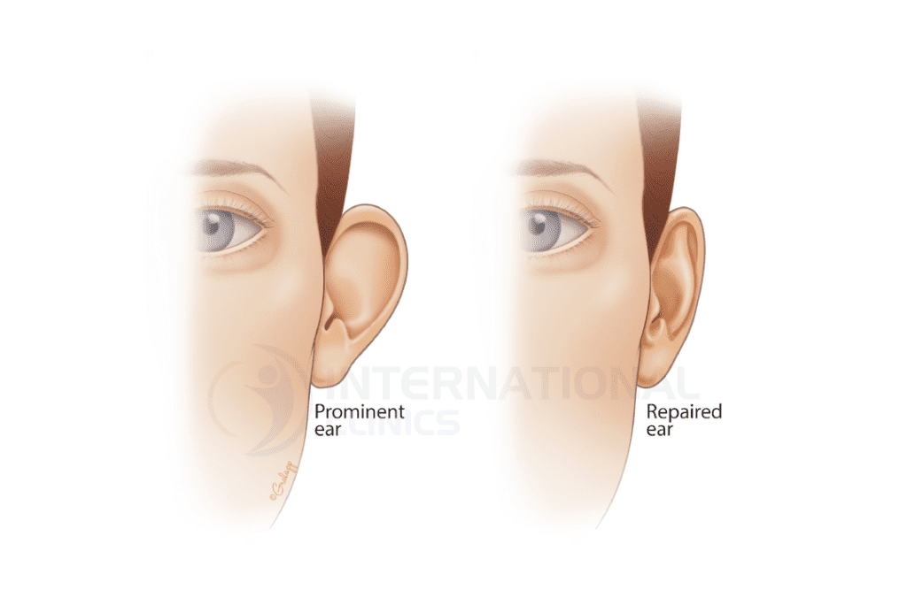

التخدير* تجرى العمليه تحت تأثير التخدير الموضعى أو الكلى بحسب رؤيه الطبيب و لكن غالبا تجرى العمليه تحت تأثير التخدير الكلى مدة العملية* تستغرق العمليه حوالى ساعه واحده الجراحة | وصف العملية* يتم ترسيم حجم الثدي المناسب ثم يستخدم شق جراحي من 3-5 سم تحت الثدي أو حول المكان المحيط بالحلمه ويتم وضع الحشو السليكون في الثدي أعلى أو أسفل عضله الصدر لزياده حجم الثدي فتره النقاهة* يتم الخروج من المستشفى فى نفس اليوم النتيجة النهائية* تظهر في الحال ولكن الشكل النهائي للثدي عاده بعد ثلاثة أسابيع
Mo - Sat: 8:00am - 9:00pm

عمليات التجميل
بفخر وأمان، نطمئنكم أن جميع العمليات التجميلية تتم تحت إشراف هيئة طبية وهيئة تمريض على أعلى مستوى من الخبرة والاحترافية. تمتاز غرف العمليات لدينا بالتجهيزات الحديثة والتكنولوجيا المتقدمة لضمان جودة عالية ونجاح مضمون بنسبه 100 %
نحن نفهم مدى أهمية سلامتكم وجمالكم، ونسعى دائمًا لتقديم الأفضل لكم. تفضلوا بزيارتنا وتجربة الاعتناء بأنفسكم بثقة تامة.
صوره لمريضه قبل وبعد عمليه شد الوجه

قبل العملية، يكون وجه الشخص عرضة لعلامات التقدم في العمر، والتي تشمل التجاعيد وفقدان مرونة الجلد اما بعد عملية شد الوجه، يمكن رؤية تحسنًا واضحًا في مظهر الوجه. يتم شد الجلد ورفعه بشكل فعّال للحد من التجاعيد وزيادة مرونته

تكبير و تصغير و شد ورفع و اعاده بناء الثدي
- اولا : تكبير الثدي
- ثانياً : تصغير الثديين
التخدير* تجرى العمليه تحت تأثير التخدير الكلى مدة العملية* تستغرق العمليه حوالى ساعتين الجراحة | وصف العملية* تم إجراء العملية بطريقة الشق الجراحي المفتاحي أو الطولي حيث يتم استئصال الأنسجة من الثديين وإزالة مساحة من الجلد وإعادة تشكيل الثديين وموقع الحلمتين بشكل جديد مناسب لحجم الثديين، ثم يقوم الجراح بوضع أنبوب لتصريف السوائل والدم الذي قد يتجمع بعد العملية ثم يخاط الجرح في مستويات متعددة ويضع شريطا لاصقا حتى لا تكبر ندبة الجرح، ويمكن للمرأة أن تغادر المستشفى بعد ٤ ساعات من إجراء العملية، ويتم إزالة أنبوب التصريف في اليوم الثاني فتره النقاهة* يتم الخروج من المستشفى فى نفس اليوم و يمكن ممارسه الحياه الطبيعيه بعد اسبوع من ازاله الأنبوبه المصرفه للدم التى توضع أثناء العمليه. النتيجة النهائية* تظهر بعد ٣ شهور من تاريخ العمليه
- ثالثاً : رفع وشد الثدي
التخدير* تجرى العمليه تحت تأثير التخدير الكلى مدة العملية* تستغرق العمليه حوالى ساعه و نصف الجراحة | وصف العملية* يتم ترسيم شكل الثدي المزمع تحقيقه وتحديد موضع الشق الجراحي.. والحلمة بدقة، تم استئصال الجلد المترهل بواسطة شقوق جراحية متعددة أكثرها انتشارا الشق الجراحي المفتاحي حيث يمكن من خلال هذه الطريقة تصغير قطر الثدي ورفع الحلمة والثدي في آن واحد، ولا تتطلب هذه العملية استئصال أي أنسجة من الثدي وإنما فقط ازالة سنتيمترات محدودة من الجلد، ولذلك يبدو الثدي بنفس الحجم، لكنه أكثر تماسكا ويستخدم الشق الجراحي الطولي حيث يخاط الجرح بشكل متكمش يؤدي إلى تصغير طول الشق الجراحي.. الذي يظهر فقط امام الثدي دون اية ندبات على الجانبين يخاط الجرح في مستويات متعددة فتره النقاهة* يتم الخروج من المستشفى فى نفس اليوم و يمكن ممارسه الحياه الطبيعيه بعد ثلاثه أيام من ازاله الأنبوبه المصرفه للدم التى توضع أثناء العمليه. النتيجة النهائية* تظهر بعد 6 شهور من تاريخ العملية
- رابعا : اعادة بناء الثدى
التخدير* تجرى العمليه تحت تأثير التخدير الكلى مدة العملية* تستغرق العمليه حوالى من 3 – 5 ساعات فتره النقاهة* يتم الخروج من المستشفى بناء على تعليمات الطبيب المعالج و عاده يتم المكوث من 3 الى 5 أيام للاطمئنان على النسيح المستخدم من البطن أو الظهر النتيجة النهائية* بعد 3-6 شهور من تاريخ العملية
تجميل الوجه والانف

- اولاً : تجميل الأنف
التخدير* تجرى العمليه تحت تأثير التخدير الكلى أو الموضعى بحسب ما يراه الطبيب مدة العملية* تستغرق العمليه حوالى ساعه و نصف الجراحة | وصف العملية* يرفع الجراح جلد الأنف و يفصله عن عظم و غضروف اللأنف ثم يعيد تشكيل الأنف و من ثم يضع الجراح جبيره بلاستيكيه على الأنف للحفاظ على شكل الأنف فتره النقاهة* يتم الخروج من المستشفى عاده بعد أقل من 3 ساعات من انتهاء العمليه و يتم ممارسه الحياه الطبيعيه بعد أسبوع من تاريخ العملية النتيجة النهائية* من 6 شهور الى سنة من تاريخ اجراء العملية

شد الجبين ورفع الحاجبين بالمنظار
- ثانياً : شد الجبين ورفع الحاجبين بالمنظار
التخدير* تجرى العمليه تحت تأثير التخدير الكلى أو الموضعى بحسب ما يراه الطبيب مدة العملية* تستغرق العمليه حوالى نصف ساعة الى ساعة الجراحة | وصف العملية* يرفع الجراح جلد الجبهه عن طريق المنظار عن طريق 4 فتحات طول كل جرح لا يتعدى 2 سم بفروه الرأس فتره النقاهة* يتم الخروج من المستشفى عاده بعد أقل من 3 ساعات من انتهاء العمليه و يتم ممارسه الحياه الطبيعية بعد أسبوع من تاريخ العملية النتيجة النهائية* تظهر بعد ٣ شهور من تاريخ العملية

جراحه الجفون التجميلية
- ثالثاً : جراحه الجفون التجميلية
التخدير* تجرى العمليه تحت تأثير التخدير الموضعى عاده مدة العملية* تستغرق العمليه حوالى ساعه و نصف للجفنين ( العلوى و السفلى ) الجراحة | وصف العملية* في ما يتعلق بالجفن العلوي ، يجري الجراح شقًا جراحيًا في ثنية الجفن العلوي الواقعة فوق الرموش تمامًا. أما بالنسبة إلى الجفون السفلية، فيشق الجراح إما تحت الرموش أو داخل الجفن من دون شق الجلد فتره النقاهة* يتم الخروج من المستشفى عاده بعد أقل من 3 ساعات من انتهاء العمليه و يتم ممارسه الحياه الطبيعيه من ثانى يوم من الجراحه النتيجة النهائية* بعد شهر ونصف من تاريخ العملية

عملية شد الوجة
- رابعاً : عملية شد الوجة
التخدير* تجرى العمليه تحت تأثير التخدير الموضعى أو الكلى بحسب رؤيه الطبيب مدة العملية* تستغرق العمليه حوالى 3 الى 5 ساعات الجراحة | وصف العملية* يُشد الشعر كله إلى الخلف بواسطة شريط مطاطي وتقصّ بعض الخصل القريبة من الشقوق. يبدأ الشق فوق خط الشعر عند الصدغين ويمتد أمام الأذنين ثم خلفهما وصولاً إلى فروة الرأس. ويتم أيضًا إجراء شق جراحي صغير تحت الذقن لشد العنق. ويشد الجراح بعدها العضلات والنسيج المترهل ويزيل الدهون الزائدة. وبعد شد الطبقات العميقة للنسيج، يرفع الجلد الزائد ويسحبه إلى جهة الأذن ويتخلص منه ثم يقطب الشقوق ويلف الوجه لحماية المنطقة. فتره النقاهة* يتم الخروج من المستشفى فى نفس اليوم الا أن بعض الناس يفضلون المكوث فى المستشفى بضع أيام لوجود بعض التورمات و الزرقان بالوجة النتيجة النهائية* بعد 6 شهور من تاريخ العملية

جراحه الذقن التجميلية
- خامساً: جراحه الذقن التجميلية
التخدير* تجرى العمليه تحت تأثير التخدير الموضعى أو الكلى بحسب رؤيه الطبيب مدة العملية* تستغرق العمليه حوالى ساعه و نصف الى ساعتين الجراحة | وصف العملية* يصغّر حجم الذقن من خلال إجراء شق في الفم خلف الشفة السفلى . ثم يتم تقليص العظمة بواسطة أدوات قوية لتكسير العظم. ويتم تكبيره عبر دفع عظمة الذقن إلى الأمام أو وضع غرسة اصطناعية فتره النقاهة* يتم الخروج من المستشفى فى نفس اليوم الا أن بعض الناس يفضلون المكوث فى المستشفى بضع أيام لوجود بعض التورمات و الزرقان بالوجه, يتعين على المريض ارتداء طوق للذقن و تناول طعام طري لمدة ثلاثة أسابيع النتيجة النهائية* بعد 3 شهور من تاريخ العملية

جراحة الأذن التجميلية
- سادساً: جراحة الأذن التجميلية
التخدير* تجرى العمليه تحت تأثير التخدير الموضعى أو الكلى بحسب رؤيه الطبيب و عاده بتخدير كلى للأطفال مدة العملية* تستغرق العمليه حوالى ساعه واحده الجراحة | وصف العملية* تم العملية عن طريق إجراء شق جراحي خلف الأذن بحيث تكون الندبات غير مرئية . ثم يزيل الجراح الكمية اللازمة من الغضروف والجلد ويضع قطبًا دائمة بهدف شد الأذن إلى الخلف وإعادتها إلى وضعها الطبيعي أوقد يكتفي بوضع القطب لتثبيت الغضروف في مكانه بصورة دائمة من دون أن ينتزع منه شيئًا فتره النقاهة* يتم الخروج من المستشفى فى نفس اليوم النتيجة النهائية* بعد 3 شهور من تاريخ العملية